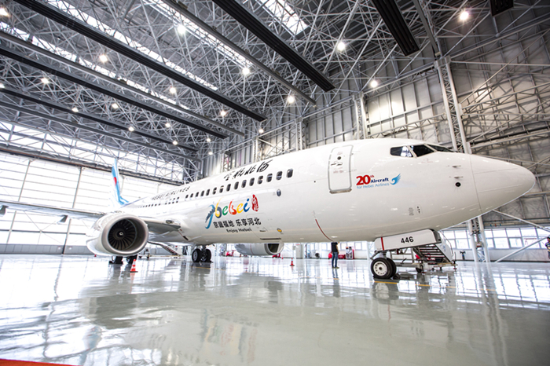
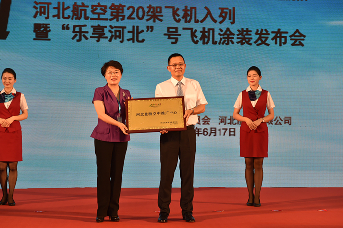

“乐享河北”号打造空中推广中心
河北新闻网 2017-06-15
6月17日，河北航空第20架飞机入列暨“乐享河北”号命名仪式在石家庄正定国际机场举行。这架波音737-800飞机机身“京畿福地 乐享河北”的特色喷绘以及数字“20”的字样非常醒目。
厦门航空董事长车尚轮、河北省国资委主任王昌、河北省旅游委副主任王荣丽、河北省委外宣局常务副局长王凤、河北省发改委副主任贾乐堂、河北省交通厅副厅长王普清、河北航空总经理蒋卫东共同为“乐享河北”号飞机揭幕。王荣丽代表河北省旅游委为这架飞机颁发了“河北旅游空中推广中心”标牌，并为飞机机组人员颁发了“河北旅游空中使者”证书。
据了解，这架飞机的机舱内部进行了全面的旅游化装饰，包括在座椅头枕、小桌板等处印制、张贴河北旅游形象标识，摆放河北旅游宣传品以及播放河北旅游宣传片。飞行途中，空乘人员在进行基本航空服务的同时，还将为旅客提供旅游咨询服务，推介河北当季旅游精品。 河北航空公司将优先安排这架“乐享河北”号飞机执行河北旅游城市和全国重点客源城市间的旅游航线和旅游包机业务，最大限度发挥“河北旅游空中推广中心”的作用。河北省旅游委将在国内重点客源市场，举行多样化旅游宣传推广活动，让“乐享河北”号执飞航线与河北旅游市场营销更紧密结合，形成宣传的放大效应，进一步打响河北旅游品牌。 河北航空公司将优先安排这架“乐享河北”号飞机执行河北旅游城市和全国重点客源城市间的旅游航线和旅游包机业务，最大限度发挥“河北旅游空中推广中心”的作用。河北省旅游委将在国内重点客源市场，举行多样化旅游宣传推广活动，让“乐享河北”号执飞航线与河北旅游市场营销更紧密结合，形成宣传的放大效应，进一步打响河北旅游品牌。 据介绍，除了旅游品牌上飞机，河北省旅游委还正在积极推动旅游品牌上高铁、上高速的工作，以及与全省性大型经贸、文化活动的对接，与省内知名工业、农业、文化产品的结合，努力构建聚合社会各方面力量的大旅游宣传格局。

- 涿鹿：突出两大文化品牌打造全域旅游新格局
- 蔚县民俗文化旅游节荣获最具特色民族节庆
- 2017首届“秦皇岛礼物”旅游商品创意设计大赛全面启动
- 旅发大会按时推进
- 我市7个项目入选2017年河北省旅游重点项目名单
- 承德汽车赴枫水湾森林温泉养生一日游 [06-05]
- 张家口市蓝天国际旅行社有限公司[06-06]
- 河北长城精华之旅 [06-07]
- 走访定州回味古韵一日游[06-08]
- 避暑山庄.坝上草原.滦河源.元上都遗址三日游 [06-09]
河北概况 河北（hé běi），简称冀，省会石家庄，河北在战国时期大部分属于赵国和燕国，所以河北又被称为燕赵之地。河北位于东经113°27'至119°50'，北纬36°05'至42°40'之间,地处华北，漳河以北，东临渤海、内环京津，西为太行山地，北为燕山山地，燕山以北为张北高原，其余为河北平原，面积为18.88万平方千米。河北省是中国唯一兼有高原、山地、丘陵、平原、湖泊和海滨的省份。是中国重要粮棉产区。经初步核算，2015年全省生产总值实现29806.1亿元。工业生产中的一些行业和产品在中国居重要地位。河北地处中原地区，文化博大精深，自古有“燕赵多有慷慨悲歌之士”之称，是英雄辈出的地方。